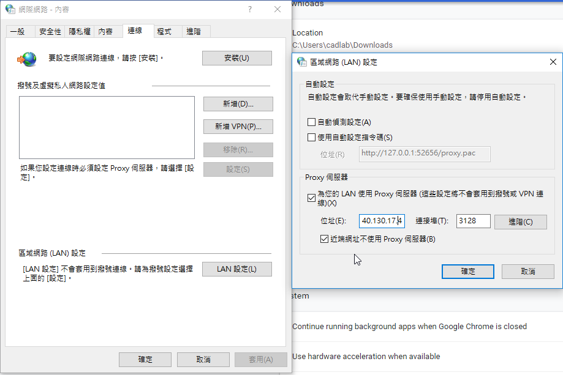
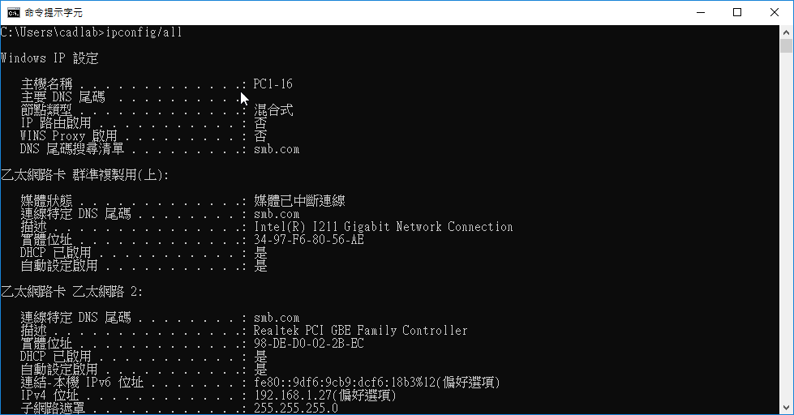
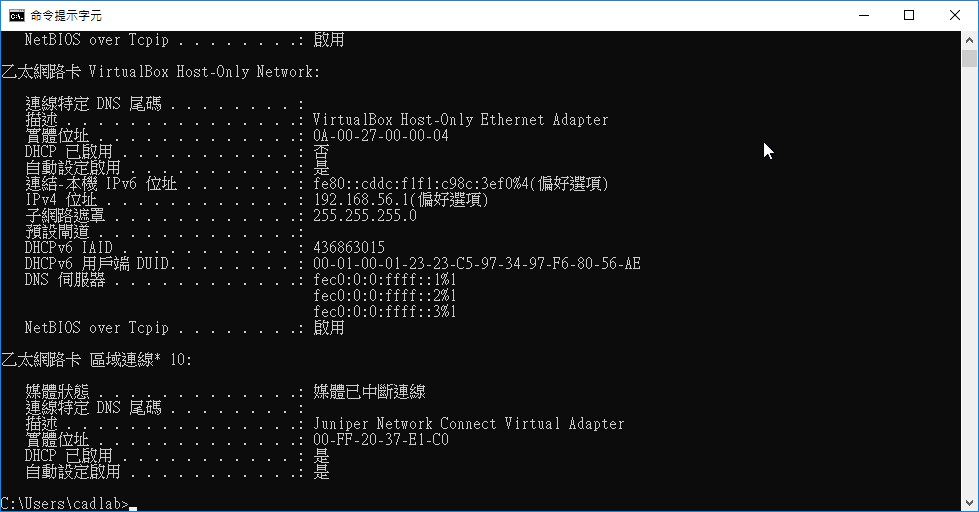

在網際網路內容管理教室，可以經由連線至proxy來取的網路而進一步開始作業。
有分為IPV4以及IPV6；都使用IPV4居多。IPV4的形式為140.130.17._。若無特別的問題都連至42或53居多。如果電算中心的電腦發現某一個正在疑似挖礦或其他不良等行為，該網址即會被封鎖。而若要使用proxy代理主機的過程中若有要求輸入帳密時，帳密皆為mdeuser。
好處:可以增加可用頻寬

補充:學校的DNS為140.130.1.2 系上(機械設計工程系)的DNS為140.130.17.3
*IP位置為192.168.....的話，為內部IP (外人連不到) *一個網卡可設置多個IP
可從cmd(命令提示字元)並輸入ipconfig/all(internet protocol configuration)來查詢目前電腦的IP設定
 